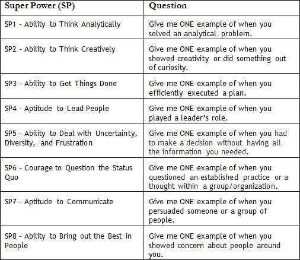
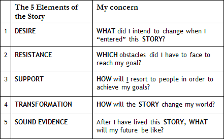

DISCLAIMER: to enjoy this reading fully, you must have read Km 1 and written your first STORY (Km 1).

It is true.


Megaron, I guess most of your students are analysts in the industries of Management Consulting (MC), Private Equity (PE) and Investment Banking (IB), aren’t they?

Yes, most of them…
Are these people able to sell innovation as strength?
I know what you mean, but hold on, no one is admitted exclusively because of his or her résumé.
Oh?
No. But before delving into this discussion, shall we recap where we are? You have just written the first of a series of 4 STORIES about our 8 Competences (Km 1).
Yes, we have discussed the first of them, SP 1 - Ability to Think Analytically.
That is the first Super Power (SP) that the 4 Heroes reveal to the Admission Committee (AdCom) members. We will now discuss the second, SP 2 - Ability to Think Creatively. First, though, do you want to share your impressions on the exercise? Was it difficult to put together your STORY?
Yes… and no, it was not that difficult… During the week, I read the STORIES of the 4 Heroes and reflect a lot about everything they said. It was excellent mainly because I could have an idea of what goes in an MBA essay. Honestly, I had no idea how the applicants positioned their pitches.
Have you noticed that because of the different profiles, each Hero explores the “Problem Solving” theme under a very distinct perspective?
I surely did, and that is why I thought it would be better to reflect upon what they said before I could start my brainstorming. It was interesting to see how each told his or her story.
Remember that it is not enough to realize the difference in the way they narrate their STORIES. I want you to pay special attention to the WHY's behind each of these 4 STORIES.
I noticed that they always bring some kind of motivation to their stories. People are really very different from one another.
They are, indeed. During the week, you should reflect upon the way (WHAT) you act upon the world.
And the WHY's.
Sure. And you can get the best insights when you compare your perception of the world with that of other people.
Yeah.
But, after all, did you have good ideas to explore? I mean, was it hard to select the story to expose in the Problem Solving theme?
I did have some trouble. I was in doubt between writing an episode from the Jr. Enterprise and narrating an engagement from last year at my consulting firm. In the end, I reserved the story about the Jr. Enterprise for later, for I think it better suits another Competence, Communication.
That is why it is important to look at all competences (and their questioning) that we will explore in the first 8 Km.

Awesome.
One interesting aspect of the methodology is that from km 1, the Megaron Marathon will force you to revisit all the STORIES that you think you can explore in your application.
I hope that in the future, I can change the theme for the same story. Today I think this situation in the Jr. Enterprise better suits the Communication theme (SP7 - Aptitude to Communicate), but later, can I use this story for another theme, say... SP4 - Aptitude to Lead People?
You surely can. Later on, you will do an exercise of SYNTHESIS in which you will then revisit all your stories. You can then select and explore the same story under another perspective.
How concerned should I be about adapting my STORY to what the school wants to hear?
What do you mean?
I believe that at the right moment, you will help me tell the same story highlighting what the various schools ask for and expect to hear.
Yes, but for now, you should not worry about that. After all, it is difficult enough for students to show their multiple STORIES without worrying about what future readers will think of them.
So let’s speak about this issue later.
We will. Now, you have to focus on telling me your best story.
Ok, Megaron, and for Km 2 do I have to sell the same "Post-MBA Working Hypothesis"?
The first Kilometers are a kind of “test field” for your hypothesis about the future. If you believe you must change your hypothesis because of practical evidence, why not? A former student, for instance, sold three distinct post-MBA goals in his Marathon. In the end, he believed that his best stories could support the thesis de that he would work in the Media & Entertainment (M&E).
And was he already in the M&E industry?
No, he was not. He worked at a Big-4 consulting firm. And he had never worked in an engagement that explored M&E, either.
Curious.
In the end, he went to Stanford and worked at Disney in the summer. At the time, he sent me an e-mail: "Mega, after all, what I wrote was not bullshit, huh?"
Neat, that is what I expect: the reflections on my future should offer me more resources to make my sale. But, between you and me, what matters really is what happens when I start my MBA.
I am glad you have such discernment.
What about today? What do I have to write about SP2 - Ability to Think Creatively?
Don’t you know?
Exploring Critical Thinking in the previous STORY made total sense. After all, I must show that I am competent in Analytical Capacity Competence. I will do an MBA, right? But creativity? I wonder if such Competence is relevant for most applicants.
I have realized that this is becoming a recurrent theme in essays and interviews. Recently, applicants had quite a hard time answering a question presented by Wharton (2012): “Discuss a time when you have been innovative in your personal or professional life. (600 words)”
Ok. They are probably looking for entrepreneurial people. That seems to be the current trend.
Certainly. We will talk more about the 8 Top Inspiring Post-MBA later on in the Marathon, ok?
But I imagine, after I observed Km 1, that there are various different ways for one to sell oneself as an innovator, am I right?
Oh, definitely. Have you read the testimonials of the 4 Heroes this week?
I have read the stories of the 4 Heroes. They each show a very different approach to the same theme, Innovation.
Well, the whole idea of this approach is to explore the different perspectives of analyses of the same theme. That’s why you will have to reflect a lot upon which THESIS (Controlling Idea - First Paragraph) you will use.
And do I have to build the story with the same DESIGN as in the STORY from Km 1?
Yes. Check on the following table the questions that you must ask yourself before you start writing your STORY.

I remember. You will grade me from 0 to 5 depending on the presence or absence of each of those 5 elements.
Precisely.
Great. I hope I get a 5 this time. In the first story, I failed to reveal what I learned. I understood and agreed with your assessment. I will put a lot of effort in the next.
Perfect, Nicholas. And always remember: the story you are about to write must be told under your career perspective.
Ok, the "Paragraph 3" in the text.
Exactly.
I noticed that you will focus on what I will write in "Paragraph 2", the STORY itself. Can I write something different from what there is in "Paragraph 3"?
Be my guest. For didactic purposes, I identified only 8 possibilities for the post-MBA career, but if you want to go beyond, it is OK.
Great. One last question: just to make sure, I don’t need to tell exclusively professional stories, right?
Right. You’ve seen our heroes’ stories. They explore the most diverse themes – engagement in theater lessons, hazing in college, exchange program, etc.
I liked the STORY told by Marcus, who went to Germany to get to know himself better.
Great. Nicholas, enough taking: roll up your sleeves and get to work. As you’ve done in every Km, now you must go to Action Plan Km 2 (click: http://www.mba42.com/tasks). There I will explain how I will evaluate your text. If you still have many doubts on how to build your story, revisit the FAQ (click here ).
Wish me luck.
Good luck. On Km 4 you will have the challenge of proving that you master Competence 3 (SP3), “Ability to Get Things Done”– you will have to “give me ONE example of when you efficiently executed a plan.”
Awesome.
But before that, you will have a practical issue to solve - Km 3 shows you the Bureaucracy involved in the MBA application process.
Keep Running, Nicholas.